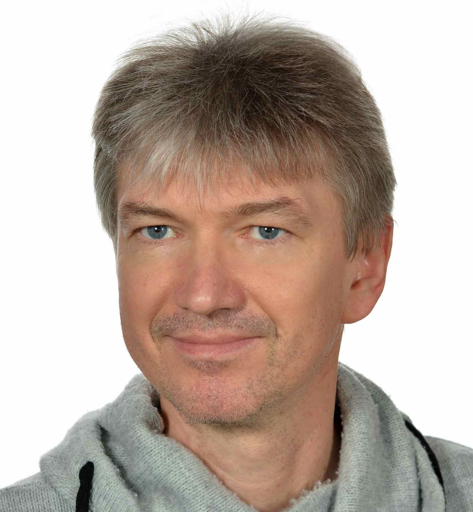

;
prof. dr hab. Krzysztof Byczuk
Professor at University of Warsaw, Faculty of Physics Director of the of Theretical Physics
Zainteresowania naukowe: Kwantowe układy wielu cząstek,
niekonwencjonalne nadprzewodnictwo, magnetyzm, przejścia fazowe, układy z nie porządkiem, lokalizacja Andersona,
przejścia metal-izolator, kondensacja Bosego-Einsteina w układach z oddziaływaniem, teoria dynamicznego pola średniego,
analityczne i numeryczne metody w teorii wielu ciał. Przydatne kursy: mechanika kwantowa, mechanika kwantowa wielu ciał,
fizyka statystyczna, metody funkcji Greena. Narzędzia: perturbacyjne i nieperturbacyjne
metody wielu ciał, kwantowe symulacje Monte Carlo, numeryczna grupa renormalizacji, ścisła
diagonalizacja.
Contact address:
Institute of Theoretical PhysicsFaculty of Physics
University of Warsaw
Pasteura 5
02-093 Warsaw
Poland
Office: A 5.12
Phone Phone: (48) 22 55 32 912
Phone Fax: (48) 22 55 32 995
Mailbox Email: Krzysztof.Byczuk@fuw.edu.pl